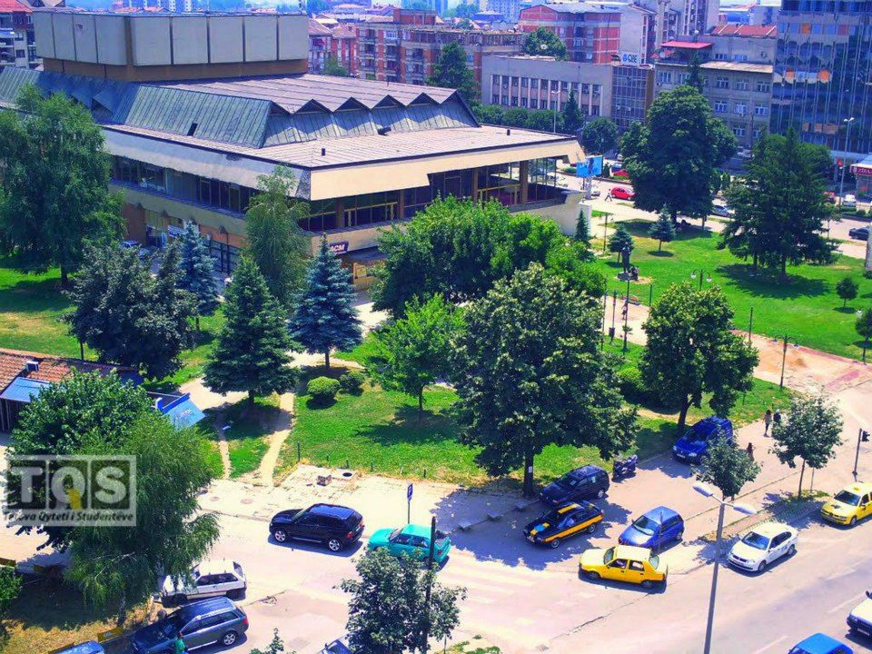

Qendra e Kulturës, “Ilo Anteski-Smok” Tetovë është ndërtuar në vitin 1973, ndërsa administrata filloi të punojë zyrtarisht në vitin 1975. Ky objekt ka hapësirë prej 6.500 metra katrorë, nga e cila 672 metra katrorë janë pjesa e skenës dhe në skenë funksionon edhe sistemi i rotacionit. Për organizimin e aktiviteteve muzikore-skenike, dramave dhe aktiviteteve të ndryshme kulturore, arsimore, politike dhe fetare kjo qendër disponon me sallën e madhe që ka 661 ulëse dhe sallë të vogël për koncerte kamertale dhe promovime me 100 ulëse. Gjithashtu, është edhe foajeja në hyrje të objektit e përshtatshme për realizim të ekspozitave të ndryshme. Qendra e Kulturës është bartëse kryesore e aktiviteteve kulturore, artistike dhe politike në Tetovë. Është e përshtatshme për koncerte të ndryshme muzikore, promovime dhe ekspozita, koncerte të ansambleve të ndryshme, mbajtje të kongreseve politike, ndërkaq në të njëjtën kohë nëpërmjet produksionit të vet amë, aktivisht vepron në nxjerrjen dhe krijimin e vlerave kulturore. Për çdo vit në ambientet e këtij institucionit të kulturës aktivitetin e tyre e zhvillojnë dhjetëra artistë të degëve të ndryshme si aktor, muzikant, këngëtarë e valltarë. Vetëm në sallën e madhe organizohen çdo vit mbi 130 aktivitete të vizituara nga mbi 50.000 shikues. Hapësirat Foaje për ekspozita, salla e vogël, salla e madhe sallat e ushtrimeve dhe grimiera Sektorët – Sektori i dramës – Sektori i letërsisë – Sektori i pikturave – Sektori i muzikës – Sektori i baletit – Sektori i folklorit Momentalisht në objektin e Qendrës së Kulturës, janë të vendosur: – Qendra e kulturës – Teatri i Tetovës – Biblioteka e qytetit – Këndi Amerikan dhe – Fakulteti i arteve të USHT-së[25] Teatri i Tetovës është një ndër teatrot më të reja në Republikën e Maqedonisë. Pas një kërkese këmbëngulëse të aktorëve të Tetovës për krijimin e një hapësire skenike ku ata do të mund të interpretojmë, në vitin 2007 formohet Institucioni Nacional – Teatri i Tetovës me një ekip të përbërë prej 15 aktorë dhe 15 punëtor administrative dhe skenik. Inaugurimi i këtij institucioni u be me premierën e shfaqjes “Çmendina” më 22 Tetor 2007. Mungesa e objektit dhe kushteve të nevojshme për funksionim normal të një Teatri, asnjëherë nuk kanë qenë pengesë që ky institucion kulturor të nxjerrë gjithsej 22 shfaqje teatrore të suksesshme që janë prezetuar në festivale të ndryshme në Maqedoni dhe në rajon përfshirë festivalin me renome ndërkombëtare “MESS” në Sarajevë, BH në tetor të vitit 2012 me shfaqjen “Akuariumi” me tekst të Refet Abazit dhe regji të Luca Cortina.[27]
